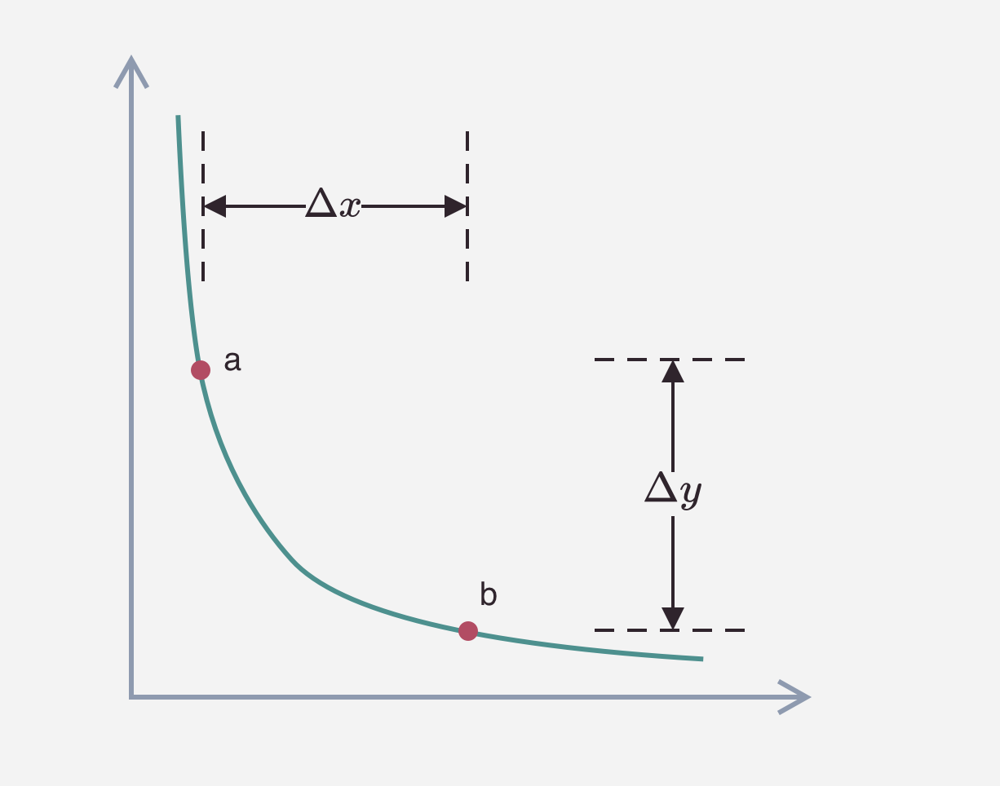

DeFi 项目分享
DeFi 项目分享
概念梳理
DeFi 定义
和 CeFi 的对比:
| CeFi | DeFi |
|---|---|
| 需要被许可:封闭系统,建立在中心化的数据库上;使用和建立需要第三方的批准和同意 | 无需许可:开源系统;建立在无许可的区块链之上;任何人都可以使用、交互操作或在其上构建,无须第三方批准和协议 |
| 托管:资产由持有执照的第三方保管 | 无托管:资产不由单独第三方保管 |
| 中心化治理:单一实体负责升级决策和管理员权限 | 去中心化的信任和治理:DAO;持有治理代币即可投票 |
| 真实身份:遵守 KYC/AML,需使用真实身份信息注册 | 匿名性隐私性:不用提供真实身份,无 KYC/AML |
DeFi 去中心化智能合约平台实现的架构
名词解释
-
EVM(以太坊虚拟机):以太坊不是分布式账本,而是分布式状态机器。以太坊的状态是一个大型数据结构,它不仅保存所有帐戶和余额,而且还保存一个机器状态,它可以根据预定义的一组规则在不同的区块之间进行更改,并且可以执行任意的机器代码。在区块中更改状态的具体规则由 EVM 定义。
-
协议 Protocol: 不同策略的 DeFi 项目
-
智能合约 Contract: 一个由程序控制的链上账戶 https://etherscan.io/tx/0x16fce0a64b5d348251ff578d945195c82ba3ec7bcd92fdd6a6222af87755b11d;从编程⻆度看,智能合约是在区块链上运行的应用程序,通过对输入数值的函数运算和存储,返回输出数据;
-
原生代币: 链上最基础的资产,会用于支付网络费用。如 Bitcoin 的基础代币是 BTC、Ethereum 的基础代币是 ETH、BSC 是 BNB、Solana 是 SOL。
-
非原生代币: 包含同质化代币 ERC20、非同质化代币 ERC721、多代币 ERC1155 等
-
TVL: Total Value Locked(总锁定价值),它泛指一个 DeFi 平台中用戶所抵押、被锁定的数字资产价值,通常用作衡量 defi 协议体量和活跃度的指标。
-
预言机(Oracle): 区块链外信息写入区块链内的机制。预言机的功能就是将外界信息写入到区块链内,完成区块链与现实世界的数据互通。它允许确定的智能合约对不确定的外部世界作出反应,是智能合约与外部进行数据交互的唯一途径,也是区块链与现实世界进行数据交互的接口。大家会很形象的把公链比作操作系统,DAPP 类比的话就是 APP,那么预言机可以形象的比做 API 接口(API 是一组定义、程序及协议的集合,通过 API 接口实现计算机软件之间的相互通信)。这个类比虽然不准确,而预言机正是扮演这样的⻆色,预言机是区块链和现实世界之间的纽带,可以实现数据互通的工具。
UNISWAP
开创 AMM 机制
Automated Market Maker,流动性池算法
https://www.youtube.com/watch?v=1PbZMudPP5E
即时流动性,无论交易规模如何
- 购买资产 X 会提高 X 的价格和降低 Y 的价格
- X 和 Y 的资产量决定了价格

优缺点:
- 无订单簿维护:但需要套利
- CPAMM 的简单实现:较低的 gas 费
- 无偿损失/币价脱钩的危险:资金可能全部流失
- 低流动性市场的高滑点:需设置 slippage tolerance
- 用戶易受三明治攻击
- 需要维持这个 swap 池,就需要有人提供流动性
流动性挖矿
Vampire Attack by SushiSwap
https://sushi.com/
开创了 LP Rewards
Uniswap V3 核心升级
https://liaoph.com/uniswap-v3-1/
1、swap 账戶里选择 token 进行兑换:复制钱包里代币对应的合约地址,输入到选择代币界面,系统会自动匹配到对应合约
-
稳定币兑换其他
- Balance of DAI roundown(含对应 USD 价值)
- Balance of ETH(含对应 USD 价值)
- 1ETH=3670DAI
-
需要上链的币
- Balance of Token1
- Balance of Token2
- 请求授权时会显示交易费?
- 执行价格和现货价差
(V2 会显示 LP 费用、路径、执行价格和现货价差;
- 要给 uniswap 授权⸺钱包上签名
- 设置滑点容忍度
- 点击 SWAP ANYWAY
- 弹出默认 gas 费,可调到更高(包含燃料价格 GWEI 和燃料限制)
2、上链!
链上查看兑换结果:

ADD LIQUIDIDTY
- 选币对
- 选手续费率
- 设置价格区间 Pmin,Pmax;输入值会自动根据 tick 调整,可选择增加或减少双边手续费(例如选 0.3%,增减手续费的变动单位即为 0.6%)
- 放入等额的两种币,满足更少的量
- 确认授权,签名
可以赚到 0.3%的手续费
上链,转入钱包对应的 NFTtoken
此时流动性产生,可在 pool 中看到对应的仓位钱包里出现 ERC721 token
V2 迁移 V3

仍需选 fee tier 和创建 price range
授权迁移签名
gas 费
CURVE
造血器+发动机
一种基于 AMM 的稳定币兑换协议,最开始他们自称稳定 swap
允许交易者把 USDC swap 为 DAI 或者其他代币,低滑点+低手续费
随着时间推移以及越来越多人加入,curve 开始增加其他的代币如 ETH 和 BTC 和其他另类资产
一、AMM 机制
恒定乘积+恒定总和
x*y=k1
x+y=k2
价格均衡点附近使用恒定总和保证稳定币兑换深度;
偏离均衡点较多时使用恒定乘积避免流动性被价格过大波动抽干
二、主营业务
-
稳定币/其他资产兑换
低兑换费用、低滑点、深度好
初期使用代币进行补贴,维持稳定币的流动性-
稳定币兑换
支持 DAI、USDC、USDT 等 20 多种稳定币的兑换 -
映射资产兑换
类似 tbtc、wbtc、rbtc、seth 等映射资产之间的兑换,保证了映射资产的流动性和价格稳定 -
票据类资产兑换
Defi 协议的票据,用来赎回用戶的本金
e.g. Compound 池里的 cDAI\cUSDC、Y(Yearn)池里的 yDAI\yUSDC\yUSDT\yTUSD,MIM 池里的 MIM
-
-
流动性挖矿
-
步骤:
- 在 Curve Pools 里选择一个流动性池,自定义存入流动池的稳定币数量;
- 查看到稳定币存入流动性池后得到的 LP 代币数量和单价,以及预计的矿工费;
- 交易发出后可以在 ETH 历史交易界面看到两笔等待打包的交易:授权交易和稳定币 DAI 兑换为 LP 代币的交易;两笔交易成功后即可在资产界面查看收到的 LP 代币。
- 将 LP 代币质押到 Curve Dao 就可以获得 CRV 代币。
-
收益来源:
- 平台 swap 交易手续费:取决于 curve 的 pool 里有多少代币、有多少人在交易以及收费标准
- LP 挖矿获得的 CRV 代币:
持有者可以将 CRV 锁仓到 Curve 协议获取 veCRV 来享受代币的治理功能和协议奖励
A. 用戶可以凭借质押的 veCRV 的数量获得全平台大部分交易池的手续费分成,比率 50%(另外 50%给流动性提供者);
B. 锁定 CRV 之后,可以通过 Boost 功能来提高做市所获得的 CRV 奖励收益
C. 协议治理 - 个别项目方如 Synthetix 和 Ren 还会提供自家代币用来激励流动性挖矿的用戶
-
矿池种类:
- 稳定币矿池:base apy 来自于手续费收益,rewards apy 来自于 LP 挖矿;
- 第三方协议矿池:yfi、compound 等。base apy 来自于第一部分手续费收益+第三方协议的存款利息,rewards apy 来自于 LP 挖矿。
-
三、⻚面操作流程
包含绑定钱包、兑换、挖矿等详细操作步骤
https://zhuanlan.zhihu.com/p/182878770
Convex
https://www.convexfinance.com/stake
服务于 Curve 的理财协议
本质是一个收益聚合器,通过聚集市场上提供 LP 用戶和持有 $CRV 用戶的资金,让双方都可以获益
产品机制
-
CRV 质押用戶
- 质押 CRV:用戶把 CRV 质押到 Convex 协议,永久锁定为 veCRV,同时获得 cvxCRV;cvxCRV 不可赎回,但可通过 Curve 上的 cvxcrv 池子 把 cvxCRV 换成 CRV
- 质押 cvxCRV:
用戶把 cvxCRV 质押后可以享受权益,随时都能取回 - 用戶可以获得:
- 50%的交易手续费($3CRV);
- Convex 原生通证 $CVX 奖励;
- CRV LP 挖矿奖励的 10%;
- Curve 提供的空投奖励
-
提供 LP 的用戶
- 用戶可以把 LP 存到 Convex 协议,随时都能赎回
- 用戶可以获得:
- 50%的交易手续费($3CRV);
- Convex 原生通证 $CVX 奖励;
- CRV LP 挖矿奖励的 90%,以及 veCRV 用戶才能得到的挖矿加速奖励;
- 其他流动性挖矿奖励(SNX、PNT、BOR、LDO 等)
-
CVX 质押用戶
在 Curve cvxcrv pool 中存入流动性,然后质押你的 cvxcrvCRV token 来赚取 CVX
提供 LP 的用戶可以获得挖矿加速奖励,Convex 会收取其中 17% 的费用,其中:
- 10% 以 CRV 的形式分配给 cvxCRV 质押者;
- 5% 以 cvxCRV 的形式分配给 CVX 质押者;
- 1% 以 CRV 的形式分配给 harvest 函数调用者(偿还调用合约函数的 gas)

稳定币项目的流动性租赁战争
Convex 是 Curve 流动性战争的真正推手,将 Curve war 彻底的白热化:
-
Convex 通过将 CRV 永久转换成 cvxCRV,分离了 veCRV 的投票权和收益权。
CRV 通过 cvxCRV 变成了是一张可转让的永恒债券。相对之前,可以在不用锁仓的情况下,赚取原来 veCRV 的大部分收益(Convex 扣除 10%的 CRV 收益)同时还赚取 CVX;而 veCRV 的投票权转让交给了 vlCVX⸺锁定的 CVX。 -
CVX 投票权代理,CVX 的⻓期持仓用戶可以通过锁定的 CVX 16 周进行投票,也可以并且把投票权进行转让给特定的地址,使得贿赂选票机制更加容易执行。
-
CVX 的 mint 的曲线是会根据 CRV 收益 claim 之后逐步减少,意味着 CVX 是随着 CRV 的增多的情况逐步通缩的,这意味着在保持住 crv 持续被吸收的情况下,越往后单个锁住的 CVX 能够控制的 veCRV 投票权会越来越多,间接代表了一个 CVX 的基础价值。
AAVE
去中心化借贷协议,支持 20 种加密货币+7 条公链
芬兰语"幽灵", 2017 年叫 ETHLend,采用点对点借贷模式,匹配效率低下;
2020 年 Aave 改进了模型,把需要借方等待贷方的传统 Peer to Peer 转换为 Peer to Smart Contract,大幅扩大规模。
借贷池
以资金池的方式聚合资金后将其出借给借方,通过算法平衡供求设定 APY;出借币种涵盖大部分主流币;
AAVE 通过本息额等量凭证代币方案,增加凭证代币数量来支付利息
超额抵押 Overcollateralized Loans
你必须存入 100$ETH 作为抵押,才能借出 80USDC
⻛控模型
应用场景:Leveraged Lending
你在 AAVE 用 100$ETH质押,换了80USDC
去Uniswap用80USDC换了80$ETH 再反手把这 80$ETH质押,换了64USDC
再去Uniswap换64$ETH 质押进 AAVE
你现在有了 100+80+64=244$ETH,如果 ETH 涨了 10%,你就能赚 24.4,相当于盈利 24.4%;
跌了就直接强平
还款
比如你现在有了 100%+的 loan,你只需要登录 AAVE 然后还贷款+一点点 aave 代币
AAVE 不会像传统借贷那样要求你在固定日期还款,只要你的质押头寸 safe 就可以一直借着,但代付利息会随时间推移越来越高,而且你的质押品也会越来越可能被强平
闪电贷 Flash Loans
不用付任何抵押品就能火速借到巨额资金,但必须迅速还回这笔钱
套利空间:你用 1$在币安买入,1.01$在 Coinbase 卖出
以太坊区块链上基本 13 秒内能实现
Compound
-
Supplying Assets
存入对应 market 的资产被表示为对应的 ERC-20 token balance (“cToken”), 当该币种 market 由于借贷需求积攒利息,cToken 可以转为标的资产的增量。持有 ERC-20 cToken 可以赚钱,类似银行存款赚利息。
-
Borrowing Assets
2.1 Collateral Value:
存入协议的资产(以 cToken 所有权表示)
Collateral factor:∈[0,90%],每个币种不一样,流动性越强 collatral factor 越高;collatral factor 为 0 的币种不能作为抵押
Borrowing Capacity=∑(Supply i*Collateral Factor i)
用戶不能借超过 capacity 的 asset,账戶不能借出、转账或赎回 cToken 抵押品,因为会使贷款总价值超出贷款能力
2.2 Risk&Liquidation
Liquidation Discount:当前 borrows 价值超过 Borrowing Capacity 时,超出的部分需充入 cToken collateral,但价值可以用当前市场价减去 Liquidation Discount,激励套利者进入,减少借贷者的⻛险敞口
Close factor:符合平仓条件的比例,是借入资产中可以偿还的部分,范围从 0 到 1。清算过程可以继续被调用,直到用戶的借款小于他们的借款能力。
Liquidation:Borrowing balance 超过 total collateral value(LTV>1)时强平
任何拥有 borrowed asset 的以太坊地址都可以调用清算功能,用他们的资产交换借款人的 cToken 抵押品。借贷双方用戶、资产和价格都包含在 Compound 协议中,清算是无摩擦的。
2.3 利率模型
Utilization ratio U:在单一变量中统一市场 a 的供需关系
Ua = Borrows a / (Cash a + Borrows a)
比如贷款利率 a 可以表示为:Borrowing Interest Rate a = 2.5% + Ua * 20%
-
Implementation
一个 Compound money market 本质是一种允许以太坊地址 supply 和 borrow 资产并计息的明细账本
3.1 cToken 合约
Supply assets→mint(uint amount underlying) cTokens,可以赎回(uint amount)cToken;
cToken 对标的资产的价格(兑换比率)会持续增⻓,因为总 borrowing balance 会因为应计利息而持续增⻓:
3.2 利率机制
Interest Rate Index:所有借款用戶统一利率标准,利率会随着市场供需变化而调整;每个币种利率由于用戶铸币、赎回、借款、偿付和清算资产导致的利率历史变更会被抓取形成 Interest Rate Index.
每次交易发生时,资产的利率指数都会更新,以使用该期间的利息(以 r * t 表示,使用 per-block 利率计算)计算自上次指数以来的复利:
更新 total Borrow Balance 包括自上一个指数以来的应计利息:并且应计利息的一部分被保留(留出)作为储备,由 reserve factor 确定,范围从 0 到 1:
3.3 Borrowing
调用 borrow 功能需检查用戶账戶净值,在抵押品充足时会更新用戶的 borrow balance,把 token 转入用戶以太坊地址并更新对应市场浮动利率。
Borrows 应计利息计算方式和 3.2 中完全一致,借款人有权在任何时候通过调用 repayBorrow(单位金额)偿还未偿贷款
3.4 Liquidation
如果由于抵押品的价值下降，或者借入的资产价值增加，用户的 borrow balance 超过其总抵押品价值(Borrowing Capacity)，则可以调用公共函数清算(address target，address collateralAsset，address borrowAsset，uint closeAmount)，该函数将调用用户的资产交换为借款者的抵押品，比市场价格略高。
3.5 Price Feeds
Price Oracle：维护每个受支持资产的当前汇率；compound 协议将设定资产价值的能力委托给一个委员会，该委员会汇总前 10 家交易所的价格。这些汇率用于确定借款能力和抵押要求，以及所有需要计算账户等值的功能。
3.6 Comptroller
Compound protocol 不支持一些 token，协议承认的 markets 必须被 whitelistedl，通过一个管理函数 supportMarket(address market, address interest rate model)实现，它允许用户开始与资产进行交互。为了借入资产，必须有来自 Price Oracle 的有效价格；为了将资产用作抵押品，必须有一个有效的价格和一个 collateral factor。 每个函数调用都通过一个名为 Comptroller 的策略层进行验证，在允许用户操作继续之前验证担保品和流动性。